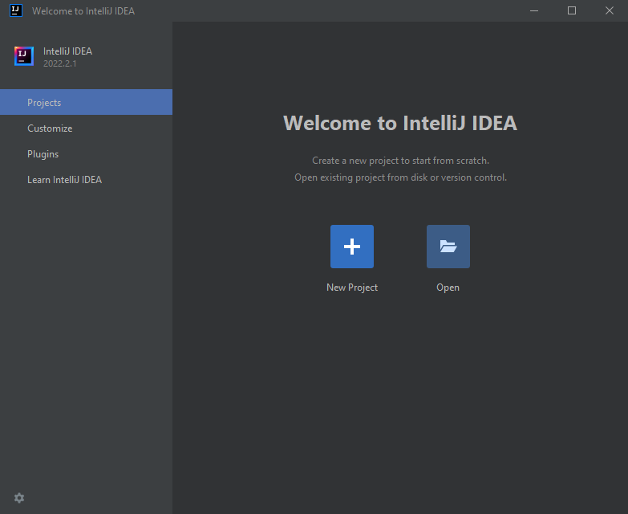
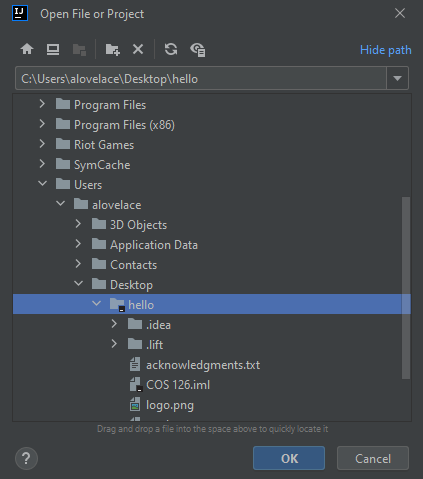
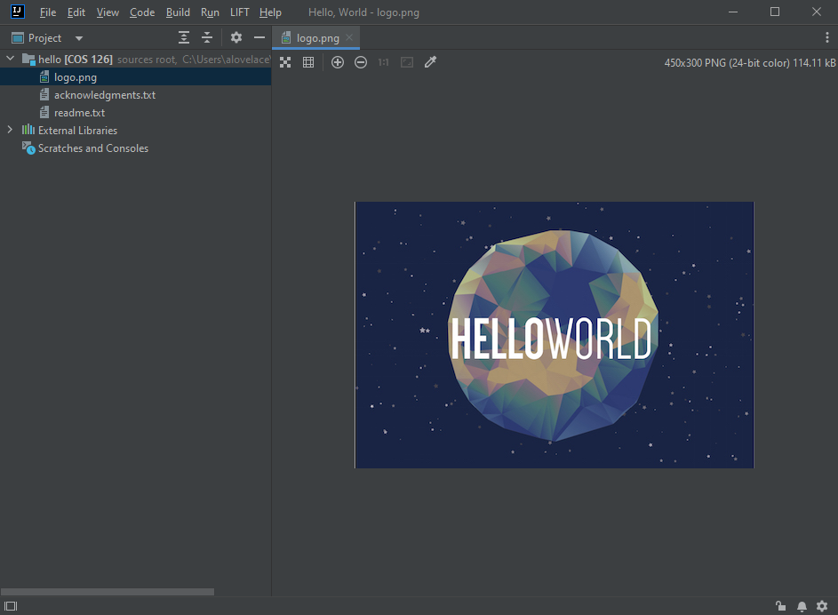
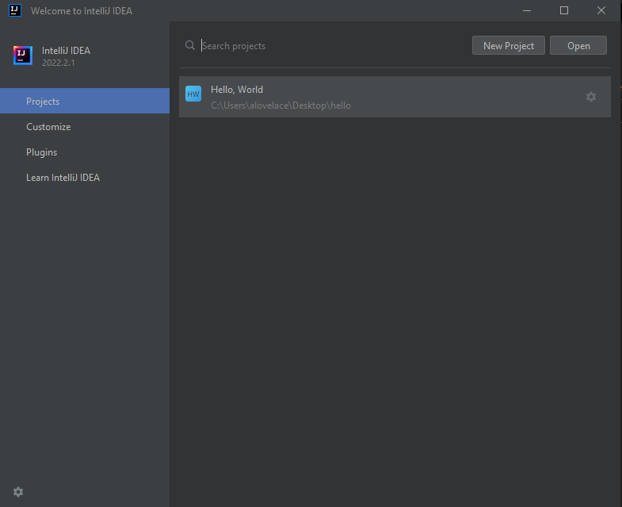
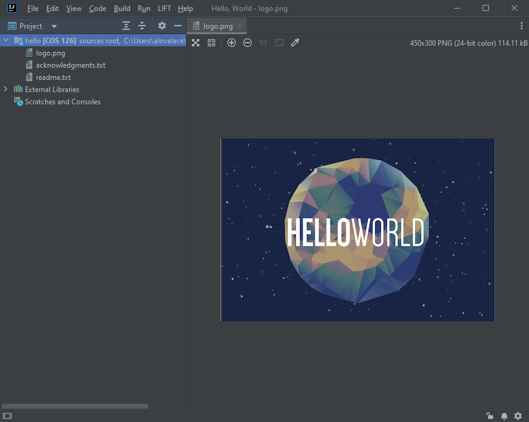
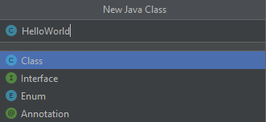
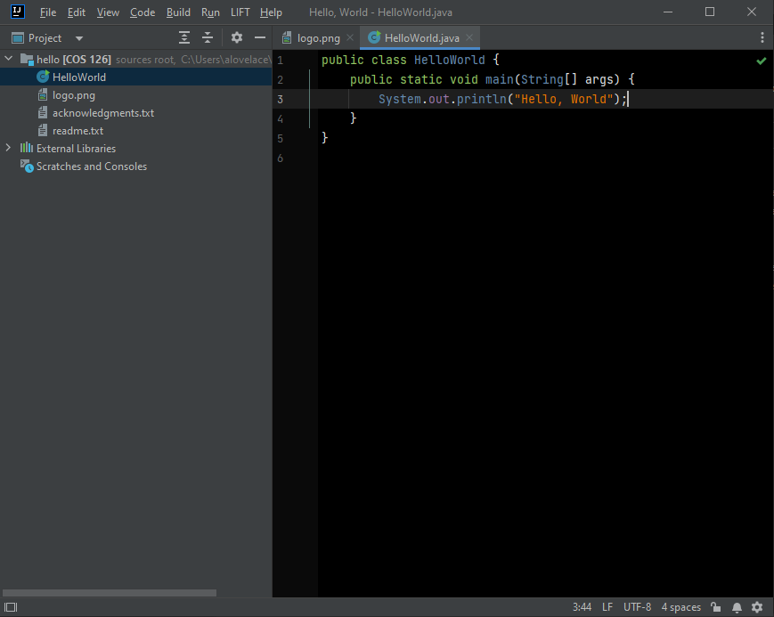
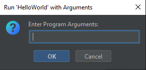
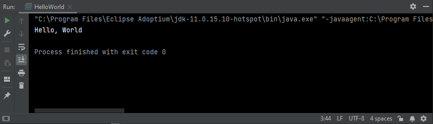
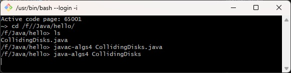

Hello World in Java (Windows)
Bản gốc: https://lift.cs.princeton.edu/java/windows/
Tài liệu này hướng dẫn bạn cách thiết lập môi trường lập trình Java
cho máy tính Windows của bạn.
Nó cũng cung cấp hướng dẫn từng bước để tạo và biên dịch một
chương trình Java trong IntelliJ và thực thi nó từ dòng lệnh.
Bạn sẽ cần phiên bản 64-bit của Windows 10 hoặc 11 trên phần cứng Intel x86.
|
0. Cài đặt Môi trường Lập trình Java
|
Trình cài đặt sẽ cài đặt và cấu hình môi trường lập trình Java, bao gồm
OpenJDK 11 và
IntelliJ IDEA Community Edition 2024.2.
-
Đăng nhập vào tài khoản người dùng mà bạn sẽ lập trình.
Tài khoản của bạn phải có quyền Administrator.
-
Download trình cài đặt cho Windows
lift-java-installer.exe.
-
Nhấp đúp vào lift-java-installer.exe để cài đặt phần mềm.
Nhập mật khẩu Windows của bạn khi được yêu cầu. Sử dụng tất cả các tùy chọn mặc định.
Cảnh báo
Nếu bạn đã sử dụng IntelliJ 2024.2 trước đây,
chỉ chạy trình cài đặt này nếu bạn muốn cài đặt lại hoàn toàn.
Trình cài đặt sẽ ghi đè bất kỳ cài đặt IntelliJ 2024.2
hiện có bằng các cài đặt thân thiện với người mới bắt đầu của chúng tôi.
Trình cài đặt cũng thực hiện cài đặt lại hoàn toàn Git Bash,
điều này sẽ ghi đè bất kỳ cài đặt người dùng trước đây nào, bao gồm .bashrc.
-
Xóa lift-java-installer.exe.
|
1. Open a Project in IntelliJ
|
Bạn sẽ phát triển các chương trình Java của mình trong một ứng dụng gọi là IntelliJ IDEA Community Edition.
IntelliJ tổ chức các chương trình Java thành các project.
Trong bối cảnh của chúng ta, mỗi project tương ứng với một bài tập lập trình.
Một project điển hình chứa các chương trình Java, các tệp dữ liệu liên quan, và
các cài đặt cụ thể của khóa học (như tùy chọn trình biên dịch, quy tắc kiểu dáng, và thư viện sách giáo khoa).
-
Download project cho bài tập lập trình của bạn đến một vị trí thuận tiện
(như Desktop).
[ project mẫu cho Algorithms, Part I or II (Coursera) ]
Để giải nén tệp zip, nhấp chuột phải vào nó và chọn Extract All.
Điều này tạo ra một thư mục project với
tên của bài tập lập trình tương ứng (ví dụ hello).
Xóa tệp zip.
Cảnh báo
Nếu bạn giải nén tệp zip bằng cách khác, bạn có thể sẽ có thêm một thư mục bên ngoài
thư mục project, được đặt tên theo tệp zip (ví dụ
hello).
Thư mục project (ví dụ
hello) luôn chứa tệp
logo.png và một tệp
.iml.
-
Để khởi động IntelliJ, nhấp vào nút Start và gõ “IntelliJ IDEA Community Edition 2024.2”.
-
Khi bạn mở IntelliJ lần đầu tiên,
-
IntelliJ có thể hiển thị
chính sách quyền riêng tư của JetBrains.
Cuộn xuống và chọn Accept (Chấp nhận).
- IntelliJ có thể hỏi bạn có muốn gửi thống kê sử dụng ẩn danh cho JetBrains không. Chọn tùy chọn bạn muốn.
- IntelliJ sẽ hiển thị màn hình Welcome to IntelliJ IDEA.
-
Để mở một project từ màn hình Welcome to IntelliJ IDEA,
hãy nhấp vào Open và chọn thư mục project.


Bạn sẽ thấy một logo bài tập (trong cửa sổ chỉnh sửa chính) và danh sách các tệp project (trong thanh bên Project View ở bên trái).
Nếu bạn không thấy thanh bên Project View,
hãy chọn LIFT → Project (Ctrl + 1) để bật/tắt nó.

Khi bạn khởi động IntelliJ lần đầu tiên,
có thể mất một hoặc hai phút để lập chỉ mục (indexing) các tệp của bạn;
một số tính năng sẽ không khả dụng cho đến khi quá trình này hoàn tất.
Cảnh báo
Không nhấp vào
New Project;
tùy chọn này dành cho lập trình viên đã thành thạo IntelliJ.
Ngoài ra, chỉ sử dụng
Open để mở một thư mục project, không dùng để mở một tệp riêng lẻ.
-
Khi bạn hoàn thành công việc, hãy chọn tùy chọn menu
File → Exit để thoát khỏi IntelliJ.
Lần tiếp theo bạn khởi động IntelliJ, các project gần đây của bạn
sẽ xuất hiện trong màn hình Welcome to IntelliJ IDEA để truy cập nhanh chóng.
|
2. Tạo một Chương trình trong IntelliJ
|
Bây giờ bạn đã sẵn sàng viết chương trình Java đầu tiên của mình.
IntelliJ có nhiều công cụ lập trình chuyên biệt
bao gồm đánh số dòng, tô sáng cú pháp, khớp ngoặc, tự động thụt đầu dòng,
tự động định dạng, tự động import, đổi tên biến, và kiểm tra mã liên tục.
-
Để tạo một chương trình Java mới:
- Mở lại IntelliJ và project (nếu bạn đã đóng ở bước trước).

-
Nhấp vào tên project trong thanh bên Project View (bên trái) để nó được tô sáng.
Nếu bạn không thấy thanh bên Project View,
hãy chọn LIFT → Project (Ctrl + 1) để bật/tắt nó.

-
Chọn tùy chọn menu LIFT → New Java Class.
Khi được nhắc, nhập HelloWorld vào trường Name, sau đó nhấn Return.

-
Trong cửa sổ chỉnh sửa chính, hãy hoàn thành chương trình Java
HelloWorld.java chính xác như bên dưới.
public class HelloWorld {
public static void main(String[] args) {
System.out.println("Hello, World");
}
}
|
Lưu ý rằng IntelliJ sẽ tự động sinh ra phần boilerplate màu xám nên bạn không cần gõ phần này.
Nếu bạn bỏ sót dù chỉ một dấu chấm phẩy, chương trình sẽ không hoạt động.
-
Khi bạn gõ, IntelliJ sẽ làm nổi bật các thành phần cú pháp khác nhau bằng các màu sắc khác nhau.
Khi bạn gõ dấu ngoặc trái, IntelliJ sẽ tự động thêm dấu ngoặc phải tương ứng.
Khi bạn xuống dòng mới, IntelliJ sẽ tự động thụt lề dòng đó.

-
Để lưu tệp, chọn tùy chọn menu File → Save All (Ctrl + S).
Khi bạn lưu tệp, IntelliJ sẽ tự động định dạng lại mã nguồn của bạn (nếu cần thiết).
Mẹo
IntelliJ được cấu hình để tự động lưu các thay đổi bạn thực hiện
trên các tệp khi xảy ra các sự kiện khác nhau (như biên dịch, thực thi, đóng tệp hoặc project,
hoặc thoát khỏi IDE).
Tuy nhiên, chúng tôi vẫn khuyến nghị bạn thường xuyên sử dụng File → Save All (Ctrl + S)
để tận dụng chức năng tự động định dạng mã nguồn.
|
3. Biên dịch và Thực thi Chương trình (từ IntelliJ)
|
Bây giờ, đã đến lúc thực thi (hoặc chạy) chương trình của bạn.
Đây là phần thú vị, nơi máy tính của bạn thực hiện các hướng dẫn
được chỉ định bởi chương trình của bạn.
Trước khi làm như vậy, bạn phải biên dịch chương trình của mình thành
a form more amenable for execution on a computer.
-
Chọn chương trình mà bạn muốn biên dịch và thực thi trong thanh bên Project View. Chương trình đó sẽ xuất hiện trong cửa sổ chỉnh sửa chính.
-
Để biên dịch chương trình của bạn,
chọn tùy chọn menu
LIFT → Recompile 'HelloWorld.java' (Ctrl + B).
Nếu biên dịch thành công, bạn sẽ nhận được thông báo xác nhận
ở thanh trạng thái (ở dưới cùng).
Nếu biên dịch thất bại, một Recompile panel sẽ xuất hiện ở phía dưới,
làm nổi bật các lỗi hoặc cảnh báo khi biên dịch.
Hãy kiểm tra kỹ chương trình của bạn để tìm lỗi chính tả, sử dụng các thông báo lỗi làm hướng dẫn.
-
Để thực thi chương trình của bạn,
chọn tùy chọn menu
LIFT → Run 'HelloWorld' with Arguments (Ctrl + E).
Vì chương trình này không nhận đối số dòng lệnh nào, hãy nhấn OK.

Bạn sẽ thấy đầu ra của chương trình (màu trắng), cùng với thông báo
rằng chương trình đã kết thúc bình thường (với mã thoát là 0).

Mẹo
Sử dụng menu LIFT để biên dịch và thực thi chương trình của bạn từ IntelliJ.
Các menu Build và Run cung cấp thêm các tùy chọn cho lập trình viên nâng cao.
Ngoài ra, hãy đảm bảo rằng cửa sổ chỉnh sửa chính đang được chọn trước khi sử dụng menu LIFT
(ví dụ: bằng cách nhấp vào đoạn mã bạn muốn biên dịch hoặc thực thi).
|
4. Biên dịch và Thực thi Chương trình (từ dòng lệnh)
|
Dòng lệnh (command line) là một cơ chế đơn giản và mạnh mẽ để
điều khiển các chương trình của bạn (ví dụ: đối số dòng lệnh,
chuyển hướng tệp, và piping).
IntelliJ cung cấp một terminal tích hợp
để dễ dàng truy cập dòng lệnh.
-
Select the menu option LIFT → Terminal (Alt + 2).
-
Thao tác này sẽ mở một
cửa sổ terminal Git Bash nơi bạn có thể nhập lệnh.
Bạn sẽ thấy một dấu nhắc lệnh trông giống như sau:
~> Active code page: 65001
~/Desktop/hello là thư mục làm việc hiện tại,
trong đó ~ là ký hiệu viết tắt cho thư mục chính của bạn.
-
Để biên dịch chương trình của bạn,
hãy nhập lệnh
javac sau.
Cụ thể, hãy nhập phần văn bản màu vàng xuất hiện trên cùng dòng với dấu nhắc lệnh.
~> javac HelloWorld.java
~>
Giả sử rằng tệp HelloWorld.java nằm trong thư mục làm việc hiện tại,
bạn sẽ không thấy bất kỳ lỗi hoặc cảnh báo biên dịch nào.
-
Để thực thi chương trình của bạn,
hãy nhập lệnh
java sau:
~> java HelloWorld
Hello, World
Bạn sẽ thấy đầu ra của chương trình bên dưới dòng mà bạn vừa nhập lệnh.
Mẹo
Thông thường, bạn nên biên dịch từ IntelliJ
(vì IntelliJ sẽ làm nổi bật các dòng có lỗi hoặc cảnh báo khi biên dịch)
và thực thi từ dòng lệnh
(vì dòng lệnh giúp bạn dễ dàng nhập đối số dòng lệnh
và sử dụng chuyển hướng tệp).
|
5. Sử dụng viện algs4 từ dòng lệnh
|
Để có thể truy cập được các thư viện textbook Java thông qua dòng lệnh,
bạn sẽ sử dụng các script wrapper của chúng tôi.
Chương trình
CollidingDisks.java
sử dụng nhiều thư viện trong algs4.jar
để mô phỏng chuyển động của n đĩa tuân theo các quy luật
va chạm đàn hồi.
Đầu tiên, tải về
CollidingDisks.java.
Sau đó, sử dụng Windows Explorer để di chuyển tệp này
vào một thư mục project (ví dụ F:\Java\hello).
Mở terminal Git Bash bằng cách nhấp vào nút Start và gõ “Git Bash”.
Chuyển đến thư mục chứa tệp CollidingDisks.java
bằng lệnh cd.

Cuối cùng, để biên dịch và thực thi chương trình,
hãy nhập các lệnh sau trong terminal:
~> ls
CollidingDisks.java
~> javac-algs4 CollidingDisks.java
~> java-algs4 CollidingDisks 20
Khi bạn thực thi chương trình, một cửa sổ standard drawing sẽ xuất hiện
với hoạt ảnh của 20 đĩa va chạm nhau.
Để lấy lại dấu nhắc lệnh, hãy đóng cửa sổ standard drawing.
Installer FAQ - Câu hỏi thường gặp về installer
-
Tôi đã cài đặt IntelliJ và Java bằng
lift-java-installer.exe vào học kỳ hoặc năm trước.
Tôi có nên cài đặt lại trong học kỳ này không?
-
Có. Trình cài đặt này bao gồm IntelliJ
và Java 11.
Trình cài đặt cũ có thể đã sử dụng phiên bản cũ hơn của
IntelliJ hoặc Java. Hãy chắc chắn gỡ cài đặt phiên bản cũ trước khi tiếp tục.
-
Tôi đã làm hỏng một số cài đặt IntelliJ của mình.
Tôi có thể chạy lại trình cài đặt để khôi phục các cài đặt này không?
-
Có.
Tuy nhiên, cách đúng để cài đặt lại phần mềm trên Windows là gỡ cài đặt hoàn toàn rồi cài đặt lại.
Vì vậy, trước tiên hãy gỡ cài đặt phần mềm; sau đó chạy lift-java-installer.exe.
-
Làm thế nào để tôi gỡ cài đặt phần mềm?
-
- Để gỡ cài đặt tất cả,
hãy điều hướng đến
C:\Program Files\LIFT-CS
và chạy trình gỡ cài đặt unins000.exe.
- Để chỉ gỡ cài đặt IntelliJ, hãy điều hướng đến
C:\Program Files (x86)\JetBrains\IntelliJ IDEA Community Edition 2024.2\bin;
nhấp chuột phải vào trình gỡ cài đặt Uninstall.exe;
và chọn Run as administrator.
-
Tôi có thể chạy trình cài đặt bằng Run as administrator không?
-
Không. Bạn phải chạy trình cài đặt từ tài khoản mà bạn muốn lập trình,
và tài khoản đó phải có quyền Administrator.
Nếu bạn sử dụng Run as administrator,
trình cài đặt sẽ không biết danh tính người dùng gốc (vì vậy không thể sao chép
các tệp vào thư mục chính của người dùng gốc).
-
Trình cài đặt bị lỗi. Làm thế nào để tôi kiểm tra nguyên nhân?
-
Kiểm tra các tệp log của trình cài đặt tại
%TEMP%\LIFT-CS\
và
%TEMP%\Setup Log YYYY-MM-DD #NNN.txt,
trong đó
%TEMP% thường là
C:\Users\<Username>\AppData\Local\Temp,
YYYY-MM-DD là ngày hiện tại,
và NNN là một số nguyên.
-
Máy tính của tôi đang chạy Windows 8. Có quá cũ không?
-
Có.
IntelliJ 2024.2 yêu cầu Windows 10 hoặc 11.
-
Trình cài đặt sẽ mất bao lâu để hoàn tất cài đặt?
-
Sau khi tải xuống, quá trình cài đặt chỉ mất vài phút.
Thanh tiến trình sẽ không di chuyển trong khi cài đặt thành phần IntelliJ,
vì vậy hãy kiên nhẫn chờ đợi.
-
Trình cài đặt lift-java-installer.exe thực hiện những gì?
-
Nói ngắn gọn, nó sẽ cài đặt và cấu hình
Java, IntelliJ,
Git Bash,
Xming,
SpotBugs,
PMD,
Checkstyle,
và các thư viện sách giáo khoa,
cùng với các công cụ dòng lệnh đi kèm.
Dưới đây là danh sách chi tiết hơn:
-
Phần mềm này được cấp phép như thế nào?
-
Tất cả phần mềm đi kèm đều được cấp phép theo các giấy phép mã nguồn mở khác nhau.
-
Mã băm sha256sum của lift-java-installer.exe là gì?
-
9ce7fdf94baf63357663a2cd1ac769f8f76ee77aaef154630df62fe177969278
-
Tôi có thể chạy trình cài đặt từ dòng lệnh không?
-
Có, lift-java-installer.exe chấp nhận các
tham số dòng lệnh tùy chọn,
hữu ích cho quản trị viên hệ thống.
Java FAQ - Câu hỏi thường gặp về Java
-
Tôi có thể sử dụng phiên bản Java khác ngoài Temurin OpenJDK 11 không?
-
Có.
Bạn có thể sử dụng bất kỳ phiên bản Java 11 trở lên nào từ Oracle hoặc OpenJDK.
Tuy nhiên, nếu làm vậy, bạn sẽ cần tự cấu hình Platform SDK và Project SDK
trong IntelliJ qua File → Project Structure.
Chúng tôi khuyến nghị sử dụng các phiên bản hỗ trợ dài hạn (LTS): Java 11 và Java 17.
-
Làm thế nào để kiểm tra phiên bản Java đã cài đặt (và vị trí cài đặt)?
-
Nhập các lệnh sau trong terminal:
~> javac -version
javac 11.0.20
~> java -version
openjdk version "11.0.20" 2022-04-19
OpenJDK Runtime Environment Temurin-11.0.20+8 (build 11.0.20+8)
OpenJDK 64-Bit Server VM Temurin-11.0.20+8 (build 11.0.20+8, mixed mode)
~> which javac
c/Program Files/Eclipse Adoptium/jdk-11.0.20.10-hotspot/bin/javac
~> which java
c/Program Files/Eclipse Adoptium/jdk-11.0.20.10-hotspot/bin/java
Điều quan trọng là số phiên bản Java phải khớp nhau và bạn thấy số
11,
còn các thông tin khác không quá quan trọng.
IntelliJ FAQ - Câu hỏi thường gặp về IntelliJ
-
Phiên bản tùy chỉnh của IntelliJ này khác gì so với bản tiêu chuẩn?
-
IntelliJ
là một môi trường phát triển tích hợp (IDE) mạnh mẽ cấp công nghiệp,
phù hợp cho các lập trình viên chuyên nghiệp.
Trình cài đặt sẽ cấu hình các tùy chọn người dùng của bạn để làm cho nó
phù hợp hơn với người mới bắt đầu:
- Vô hiệu hóa tất cả plugin tích hợp sẵn ngoại trừ Terminal và JUnit.
Cài đặt các plugin SpotBugs, Checkstyle-IDEA,
Run-with-Arguments,
Save-Actions,
và Archive browser.
- Loại bỏ hoặc giảm thiểu các popup khác nhau
(bóng đèn, thu gọn mã, breadcrumbs, đánh dấu lề, thông báo, gợi ý tham số).
- Đơn giản hóa menu và thanh công cụ, ẩn các tùy chọn nâng cao.
- Vô hiệu hóa live templates và postfix completion.
- Áp dụng giao diện màu Obsidian Black.
- Tự động cấu hình Java khi cài đặt.
- Thêm một số phím tắt.
Các thư mục project dành riêng cho khóa học sẽ thực hiện thêm một số tùy chỉnh:
- Đơn giản hóa tính năng tự động hoàn thành để chỉ hiển thị các thư viện liên quan
(như
java.lang,
java.util, và algs4.jar).
- Cấu hình SpotBugs và Checkstyle với các quy tắc riêng cho từng khóa học.
- Cung cấp các thư viện riêng cho từng khóa học (như
algs4.jar).
- Bật tính năng tự động định dạng mã nguồn khi lưu.
- Bật tính năng tự động import các thư viện Java.
-
Làm thế nào để tôi cấu hình thủ công Platform SDK và Project SDK trong IntelliJ?
-
Trình cài đặt sẽ tự động cấu hình Platform SDK.
Để cấu hình thủ công,
- Điều hướng đến File → Project Structure → Platform Settings → SDKs.
- Nhấp vào biểu tượng + (góc trên bên trái) để thêm SDK mới.
- Chọn vị trí SDK. Vị trí điển hình cho Java SDK trên
Windows là
C:\Program Files\Java\jdk11.0.20.
- Sử dụng tên viết tắt mà IntelliJ gợi ý
(ví dụ: 11 cho phiên bản 11.0.20).
Để cấu hình thủ công Project SDK,
- Điều hướng đến File → Project Structure → Project Settings → Project.
- Chọn Project SDK mong muốn từ danh sách thả xuống.
- Đảm bảo sử dụng 8 cho Project language level, vì hệ thống chấm tự động của chúng tôi
hiện chỉ hỗ trợ các tính năng của Java 8.
-
Những tùy chọn menu IntelliJ nào là quan trọng nhất cần nhớ?
-
Dưới đây là những tùy chọn quan trọng nhất (và phím tắt của chúng).
- LIFT → New Java Class (Ctrl + N). Tạo một lớp Java mới.
- LIFT → Recompile (Ctrl + B). Biên dịch chương trình hiện tại.
- LIFT → Run with Arguments (Ctrl + E). Chạy chương trình hiện tại với đối số dòng lệnh.
- File → Save All (Ctrl + S). Lưu (và định dạng lại) tất cả các tệp đang mở.
- View → Tool Windows → Project (Alt + 1). Hiện/ẩn thanh bên Project View.
- View → Tool Windows → Terminal (Alt + 2). Hiện/ẩn cửa sổ Terminal.
-
Có ký tự đặc biệt nào cần tránh khi đặt tên project hoặc tệp trong IntelliJ không?
-
Không sử dụng dấu chấm than
! làm ký tự cuối cùng
trong tên thư mục project (hoặc bất kỳ tên thư mục nào trên đường dẫn đến thư mục project);
điều này sẽ gây lỗi cho cả IntelliJ và Checkstyle.
Làm thế nào để tôi tạo một project mới trong IntelliJ?
-
Nếu bạn muốn kế thừa tất cả các thuộc tính của một project hiện có,
- Sử dụng Windows Explorer để sao chép thư mục project,
đặt tên theo ý muốn của bạn.
- Xóa bất kỳ tệp nào không mong muốn.
- Hãy chắc chắn giữ lại
tệp
.iml (định nghĩa project),
thư mục con .idea (chứa
các thiết lập khóa học của IntelliJ), và
thư mục con .lift (chứa các thư viện khóa học).
Để tạo một project mới hoàn toàn, bạn có thể sử dụng tùy chọn Create New Project từ
Welcome screen. Tuy nhiên, chúng tôi không khuyến nghị cách này cho người mới học lập trình.
-
Tôi có thể sử dụng phiên bản IntelliJ mới hơn 2024.2 không?
-
Có, tuy nhiên nếu là 2024.3 (hoặc cao hơn),
bạn sẽ cần chuyển đổi các thiết lập người dùng của mình.
-
Làm thế nào để tôi khôi phục lại các thiết lập gốc của IntelliJ
(thay vì các thiết lập rút gọn thân thiện với người mới)?
-
- Để khôi phục menu và thanh công cụ: Preferences → Appearances & Behavior → Menus and Toolbars → Restore All Defaults.
- Để khôi phục tất cả thiết lập: Help → Find Action → Restore Default Settings.
Câu hỏi thường gặp về Command-line / Terminal tích hợp
-
Khi tôi biên dịch hoặc thực thi một chương trình từ dòng lệnh sử dụng một trong các thư viện sách giáo khoa, tôi nhận được lỗi không tìm thấy thư viện. Làm sao để khắc phục?
-
Hãy đảm bảo rằng bạn đang sử dụng đúng script wrapper,
chẳng hạn như
javac-algs4
hoặc java-algs4.
- Khi tôi mở terminal tích hợp trong IntelliJ, IntelliJ hoặc là khởi động sai phiên bản Bash (như WSL Bash hoặc MinGW Bash) hoặc xuất hiện thông báo lỗi (ví dụ "couldn't create PTY error"). Làm sao để khắc phục?
- Đi tới File → Settings → Tools → Terminal → Shell path
và thay
bash bằng
"C:\Program Files\Git\bin\bash".
- Tôi gặp lỗi khi cố gắng thực thi một script wrapper (như
javac-algs4 hoặc java-introcs).
Làm sao để khắc phục?
- IntelliJ có thể đang khởi động sai shell (như Command Prompt,
PowerShell, WSL Bash hoặc MinGW Bash).
Để cấu hình lại sử dụng Git Bash, hãy làm theo hướng dẫn ở câu hỏi trước.
- Các ký tự quốc tế bị hiển thị sai trong terminal. Nguyên nhân là gì?
- Khi bạn khởi động terminal, bạn nên thấy thông báo
Activation code page: 65001,
giúp cấu hình terminal hiển thị ký tự Unicode bằng UTF-8.
Nếu bạn không thấy thông báo này, có thể bạn đang dùng sai phiên bản Bash (như WSL Bash hoặc MinGW Bash).
Để cấu hình lại sử dụng Git Bash, hãy làm theo hướng dẫn ở câu hỏi trước.
-
Tôi nên cấu hình Bash như thế nào?
-
Nếu bạn làm theo hướng dẫn của chúng tôi, các script wrapper (như
javac-algs4 và
java-algs4)
đã sẵn sàng để sử dụng.
Trình cài đặt tự động của chúng tôi sẽ tùy chỉnh dòng lệnh bằng cách sao chép ba tệp cấu hình sau:
.bashrc,
.bash_profile, và
.inputrc.
-
Làm thế nào để tôi dừng một chương trình đang chạy vòng lặp vô hạn?
-
Nhấn tổ hợp phím
Ctrl-C.
-
Làm thế nào để tôi nhập ký hiệu EOF để báo hiệu kết thúc dữ liệu đầu vào chuẩn?
-
Trên macOS và Linux, nhấn
Enter Ctrl-D.
Trên Windows, nhấn Enter Ctrl-Z Enter,
kể cả khi sử dụng Git Bash.
-
Làm thế nào để tôi chạy SpotBugs, PMD và Checkstyle từ dòng lệnh?
-
Trình cài đặt đã bao gồm các script wrapper để đơn giản hóa quá trình này.
-
Để chạy SpotBugs 4.8.4, hãy nhập lệnh sau trong terminal:
~> spotbugs HelloWorld.class
Đang chạy spotbugs trên HelloWorld.class:
Tham số truyền vào phải là danh sách các tệp .class.
Đây là danh sách
mô tả lỗi.
-
Để chạy PMD 6.34.0, hãy nhập lệnh sau trong terminal:
~> pmd HelloWorld.java
Đang chạy pmd trên HelloWorld.java:
Tham số truyền vào có thể là một tệp .java hoặc
một thư mục chứa một hoặc nhiều tệp .java.
Đây là danh sách
các mẫu lỗi.
-
Để chạy Checkstyle 10.12.1, hãy nhập một trong các lệnh sau trong terminal,
tùy thuộc vào bạn là sinh viên COS 126, COS 226 hay Coursera:
~> checkstyle -cos126 HelloWorld.java
Đang chạy checkstyle trên HelloWorld.java:
~> checkstyle -cos226 HelloWorld.java
Đang chạy checkstyle trên HelloWorld.java:
~> checkstyle -coursera HelloWorld.java
Đang chạy checkstyle trên HelloWorld.java:
Tham số truyền vào phải là danh sách các tệp .java.
Đây là danh sách
các kiểm tra có sẵn.
-
Tôi có thể sử dụng Command Prompt, PowerShell hoặc Windows Subsystem for Linux thay vì Git Bash for Windows không?
-
Chúng tôi khuyến nghị mạnh mẽ sử dụng Git Bash. Ví dụ, các lệnh
javac-algs4 và
checkstyle-algs4
chỉ hoạt động trong Git Bash. Nếu bạn muốn sử dụng shell khác, bạn sẽ cần tự cấu hình.
-
Những lệnh kiểu Linux nào có sẵn trong Git Bash for Windows?
-
Đây là danh sách các lệnh tích hợp của Bash
và đây là các lệnh bên ngoài
trong
C:\Program Files\Git\usr\bin.